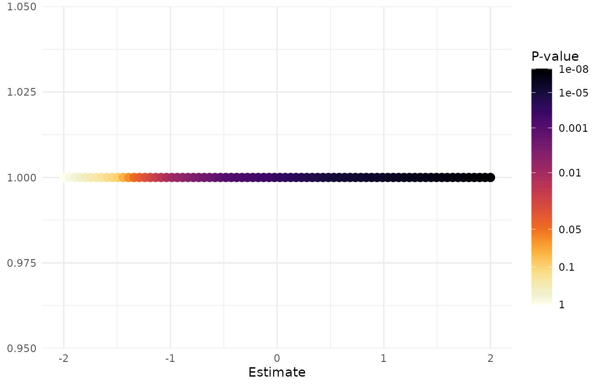
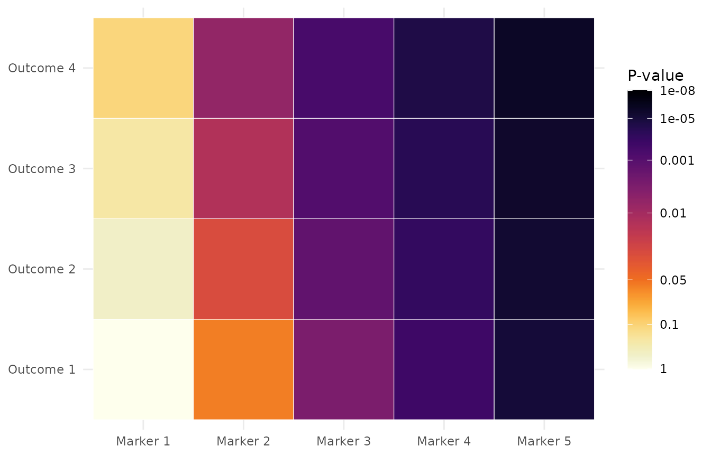
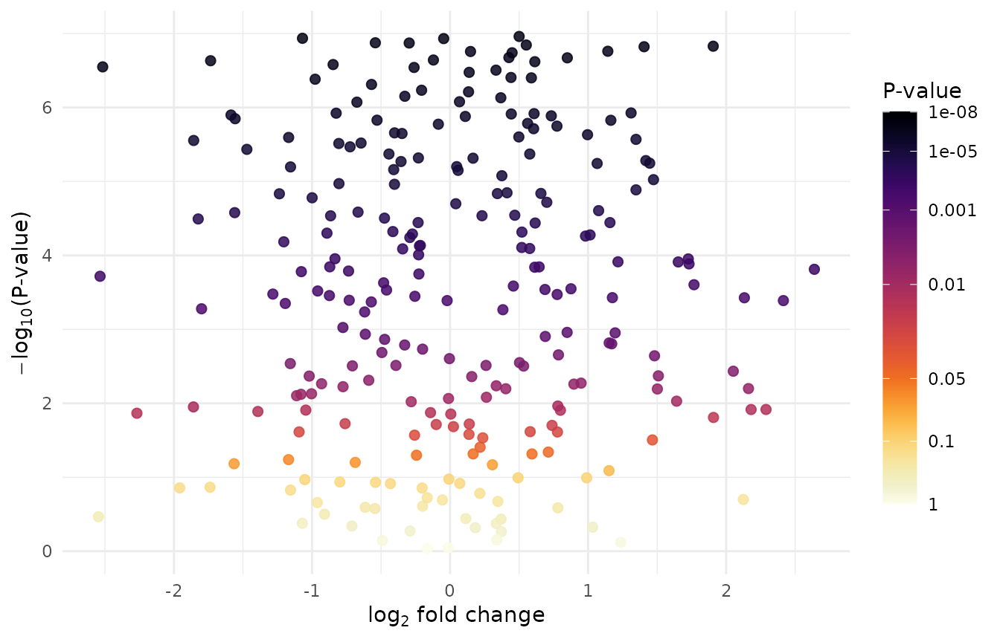
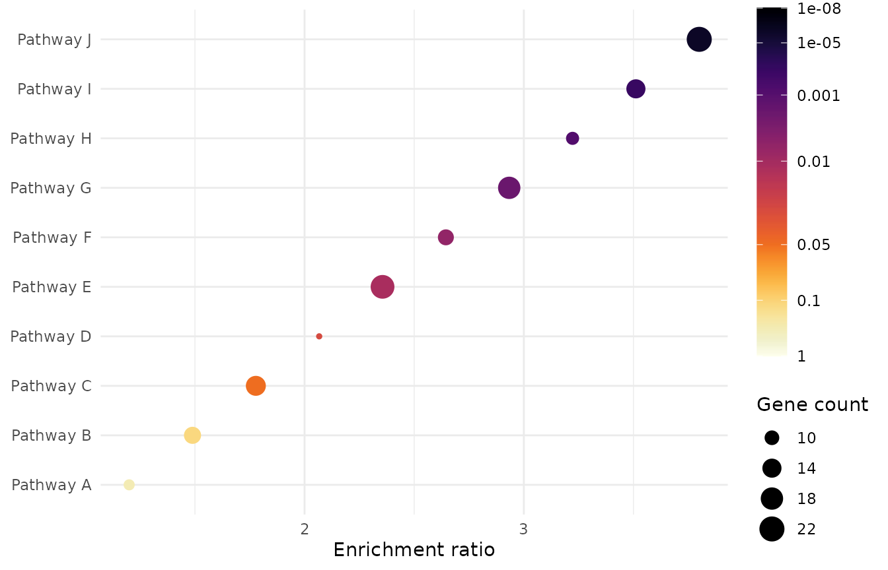
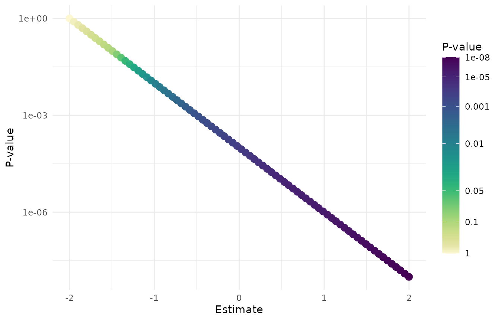
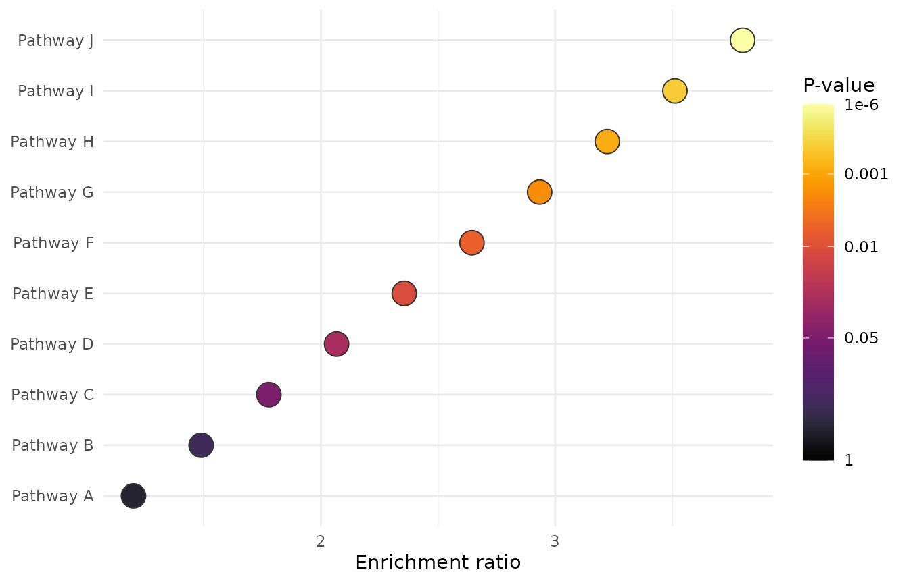

Motivation
Perceptually uniform palettes such as Viridis and Inferno are excellent general-purpose continuous color scales. Equal changes in the underlying quantity produce reasonably consistent visual changes, the palettes remain legible for many viewers with color-vision deficiencies, and their ordering survives conversion to greyscale better than many rainbow palettes.
P-values are different from most continuous measurements. Scientists usually interpret evidence around familiar thresholds such as 0.05, 0.01, and 0.001, rather than by equal numerical spacing between 0 and 1. A standard linear color scale gives most of its visual range to large, non-significant p-values and compresses the region where evidence is commonly compared.
scale_color_pvalue() and
scale_fill_pvalue() therefore use a threshold-aware
mapping. They expect raw p-values between 0 and 1,
allocate additional visual resolution near common thresholds, and
progressively desaturate values above 0.05. The legend uses the same
warped coordinates, so its raw p-value labels remain separated around
the thresholds instead of collapsing at one end. Inferno is the default
palette.
Basic usage
Use scale_color_pvalue() when a raw p-value is mapped to
color.
df_ColorExample <- data.frame(
Estimate = seq(-2, 2, length.out = 80),
PValue = 10^seq(0, -8, length.out = 80)
)
ggplot(
df_ColorExample,
aes(x = Estimate, y = 1, color = PValue)
) +
geom_point(size = 3) +
scale_color_pvalue() +
theme_minimal() +
labs(x = "Estimate", y = NULL)
Use scale_fill_pvalue() when the p-value controls a
filled geometry.
df_FillExample <- expand.grid(
Outcome = paste("Outcome", 1:4),
Marker = paste("Marker", 1:5)
) %>%
dplyr::mutate(PValue = 10^seq(0, -6, length.out = dplyr::n()))
ggplot(
df_FillExample,
aes(x = Marker, y = Outcome, fill = PValue)
) +
geom_tile(color = "white") +
scale_fill_pvalue() +
theme_minimal() +
labs(x = NULL, y = NULL)
Volcano plot example
In a volcano plot, the y-axis and color serve different purposes. The
y-axis uses -log10(PValue) to place stronger evidence
higher on the plot. The color scale must still receive the raw
PValue, because the p-value scale performs its own
threshold-aware mapping and displays raw values in the legend.
set.seed(2026)
df_Volcano <- data.frame(
Feature = paste0("Feature_", seq_len(250)),
log2FoldChange = stats::rnorm(250),
PValue = 10^stats::runif(250, min = -7, max = 0)
)
ggplot(
df_Volcano,
aes(
x = log2FoldChange,
y = -log10(PValue),
color = PValue
)
) +
geom_point(size = 2, alpha = 0.85) +
scale_color_pvalue() +
theme_minimal() +
labs(
x = expression(log[2] * " fold change"),
y = expression(-log[10] * "(P-value)")
)
Bubble plot example
Enrichment plots often use point size for the number of contributing genes and color for statistical evidence. The color aesthetic again receives the raw enrichment p-value.
df_Enrichment <- data.frame(
Pathway = paste("Pathway", LETTERS[1:10]),
EnrichmentRatio = seq(1.2, 3.8, length.out = 10),
GeneCount = c(8, 12, 15, 7, 20, 11, 18, 9, 14, 22),
PValue = c(0.32, 0.12, 0.049, 0.025, 0.011, 0.006, 0.0018, 0.0007, 1e-4, 1e-6)
)
ggplot(
df_Enrichment,
aes(
x = EnrichmentRatio,
y = reorder(Pathway, EnrichmentRatio),
size = GeneCount,
color = PValue
)
) +
geom_point() +
scale_color_pvalue() +
theme_minimal() +
labs(x = "Enrichment ratio", y = NULL, size = "Gene count")
Supported palettes
Inferno is the default. Viridis is available when a cooler palette fits the surrounding figure better.
ggplot(
df_ColorExample,
aes(x = Estimate, y = PValue, color = PValue)
) +
geom_point(size = 3) +
scale_color_pvalue(palette = "viridis") +
scale_y_log10() +
theme_minimal() +
labs(y = "P-value")
The supported values are:
scale_color_pvalue(palette = "inferno")
scale_color_pvalue(palette = "viridis")
scale_fill_pvalue(palette = "inferno")
scale_fill_pvalue(palette = "viridis")Advanced options
limits sets the raw p-value range represented by the
scale. Values outside the range are squished to the nearest limit.
breaks and labels control the raw values
displayed on the legend. direction = -1 is the default and
makes smaller p-values darker; direction = 1 reverses the
palette. The default guide uses a taller vertical colorbar so the
threshold labels remain legible. Pass guide = "colourbar"
to restore ggplot2’s standard guide dimensions, or provide a custom
ggplot2::guide_colourbar() for complete control.
ggplot(
df_Enrichment,
aes(
x = EnrichmentRatio,
y = reorder(Pathway, EnrichmentRatio),
fill = PValue
)
) +
geom_point(shape = 21, size = 6, color = "grey20") +
scale_fill_pvalue(
palette = "inferno",
direction = 1,
limits = c(1e-6, 1),
breaks = c(1, 0.05, 0.01, 0.001, 1e-6),
labels = c("1", "0.05", "0.01", "0.001", "1e-6")
) +
theme_minimal() +
labs(x = "Enrichment ratio", y = NULL)
Common mistakes
Do not transform the value supplied to the color or fill aesthetic.
# Incorrect: the p-value scale would receive transformed evidence values.
ggplot(
df_Volcano,
aes(
x = log2FoldChange,
y = -log10(PValue),
color = -log10(PValue)
)
) +
geom_point() +
scale_color_pvalue()Instead, transform only the positional axis and pass the raw p-value to the color scale.
# Correct: color receives a raw p-value between 0 and 1.
ggplot(
df_Volcano,
aes(
x = log2FoldChange,
y = -log10(PValue),
color = PValue
)
) +
geom_point() +
scale_color_pvalue()The same rule applies to fill: use
fill = PValue, not fill = -log10(PValue). Do
not use these scales for effect sizes, fold changes, correlations,
z-scores, probabilities, feature importance, or other continuous
quantities.